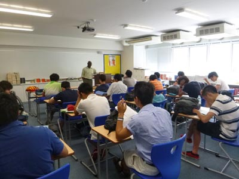

IB English Literature, HL and SL
Course Description
(Taken from IB Language A: Literature Guide)
The course is built on the assumption that literature is concerned with our conceptions, interpretations and experiences of the world. The study of literature can therefore be seen as an exploration of the way it represents the complex pursuits, anxieties, joys and fears to which human beings are exposed in the daily business of living. It enables an exploration of one of the more enduring fields of human creativity, and provides opportunities for encouraging independent, original, critical and clear thinking. It also promotes respect for the imagination and a perceptive approach to the understanding and interpretation of literary works.
Through the study of a wide range of literature, the language A: literature course encourages students to appreciate the artistry of literature and to develop an ability to reflect critically on their reading. Works are studied in their literary and cultural contexts, through close study of individual texts and passages, and by considering a range of critical approaches. In view of the international nature of the IB and its commitment to intercultural understanding, the language A: literature course does not limit the study of works to the products of one culture or the cultures covered by any one language. The study of works in translation is especially important in introducing students, through literature, to other cultural perspectives. The response to the study of literature is through oral and written communication, thus enabling students to develop and refine their command of language.
Language A: literature is a flexible course that allows teachers to choose works from prescribed lists of authors and to construct a course that suits the particular needs and interests of their students. It is divided into four parts, each with a particular focus.
The IB Language A Literature diploma program covers four semesters over two years. IB assessments are performed internally, by St. Mary's faculty, and externally, by IB examiners. Students may choose from Standard Level and Higher Level tracks, and allowances can be made for students with documented disabilities.
Grade 11 English Course Overview
Semester One: Literature in Translation (LIT)
This semester is essentially a study of literary texts that have been translated into English. This study is based upon close readings of the works themselves, but will also examine the author, culture and historical era of each work and how they correspond to students' own backgrounds and to their understanding of the texts.
For each work in translation studied, Interactive Orals (IO) and a corresponding Reflective Essay will be performed according to IB guidelines. Supervised In-class Writings will also be performed for each text, one of which will then be developed into the Final Literature in Translation (LIT) Paper. The LIT Paper and its corresponding Reflective Paper will both be sent to the IB for external assessment.
Semester Two: Free Choice (FC)
This semester will cover two areas: non-fiction prose and poetry. For the prose extended persuasive essays will be studied primarily for their argumentative content and persuasive techniques. Poetry will be studied for an understanding of how knowledge of poetical techniques provides a solid evidentiary basis for its exegesis and for a personal response by the reader poetry.
Assessment will involve testing and application of extensive technical and concept building vocabulary as well as analytical and exegetical practice culminating in a persuasive oral presentation of a previously unexamined poem by each student. These presentations will be scored and reported in keeping with IB internal assessment guidelines.
Grade 12 English Course Overview
Semester One: Detailed Studies
Studies this semester will cover works from three different genres: drama, poetry and the novel. Although the authors' biographies and the cultural, historical, and literary contexts of each work will be addressed, the emphasis will be upon the close reading of each text and the formal, stylistic, and aesthetic qualities of the texts.
Assessment will center upon students ability to engage in meaningful discussions over the readings and their ability to provide sustained commentary about important aspects of the works. Primary evaluation will occur at the end of the semester and be accomplished through the IB internal assessment, the Oral Commentary examination, according to IB protocol.
Semester Two: Literary Genre
Distinction Between SL and HL
(Taken from IB Language A: Literature Guide, p.6)
The model for language A: literature is the same at SL and HL but there are significant quantitative and qualitative differences between the levels.
SL students are required to study 10 works, whereas HL students are required to study 13.
Two of the assessment tasks for SL are less demanding than the comparable HL tasks.
- Individual oral commentary - SL students present a 10-minute formal oral commentary on one of two works studied in part 2 of the course, whereas HL students present a formal oral commentary on poetry studied in part 2 and then engage in a discussion with the teacher on one of the other two works studied.
- Paper 1 - both SL and HL students write a literary analysis of a previously unseen prose passage or poem. However, SL students write in response to two guiding questions, whereas HL students write a literary commentary with no assistance from guiding questions.
In addition, the external assessment criteria for papers 1 and 2 and the internal assessment criteria are clearly differentiated. HL students are expected to show a deeper understanding of content and writers' techniques than SL students. The requirements for depth of knowledge and understanding, and for demonstrating the skills of analysis, synthesis, evaluation and organization are less demanding at SL than at HL.
The distinction between SL and HL is summarized below.
| Part of the Course | SL | HL |
|---|---|---|
| Part 1: Works in translation | Study of two works in translation from the prescribed literature in translation (PLT) list | Study of three works in translation from the prescribed literature in translation (PLT) list |
| Part 2: Detailed study | Study of two works, each of a different genre, chosen from the prescribed list of authors (PLA) | Study of three works, each of a different genre (one of which must be poetry), chosen from the prescribed list of authors (PLA) |
| Part 3: Literary genres | Study of three works of the same genre, chosen from the PLA | Study of four works of the same genre, chosen from the PLA |
| Part 4: Options | Study of three works freely chosen | Study of three works freely chosen |
| External Assessment | SL | HL |
| Paper 1: Literary Analysis | A literary analysis of a previously unseen passage in response to two guiding questions | A literary commentary on a previously unseen passage |
| Internal Assessment | SL | HL |
| Individual Oral Commentary | A 10-minute oral commentary based on an extract from one of the works studied in part 2 | A 10-minute oral commentary on poetry studied in part 2, followed by a discussion based on one of the other two works studied |